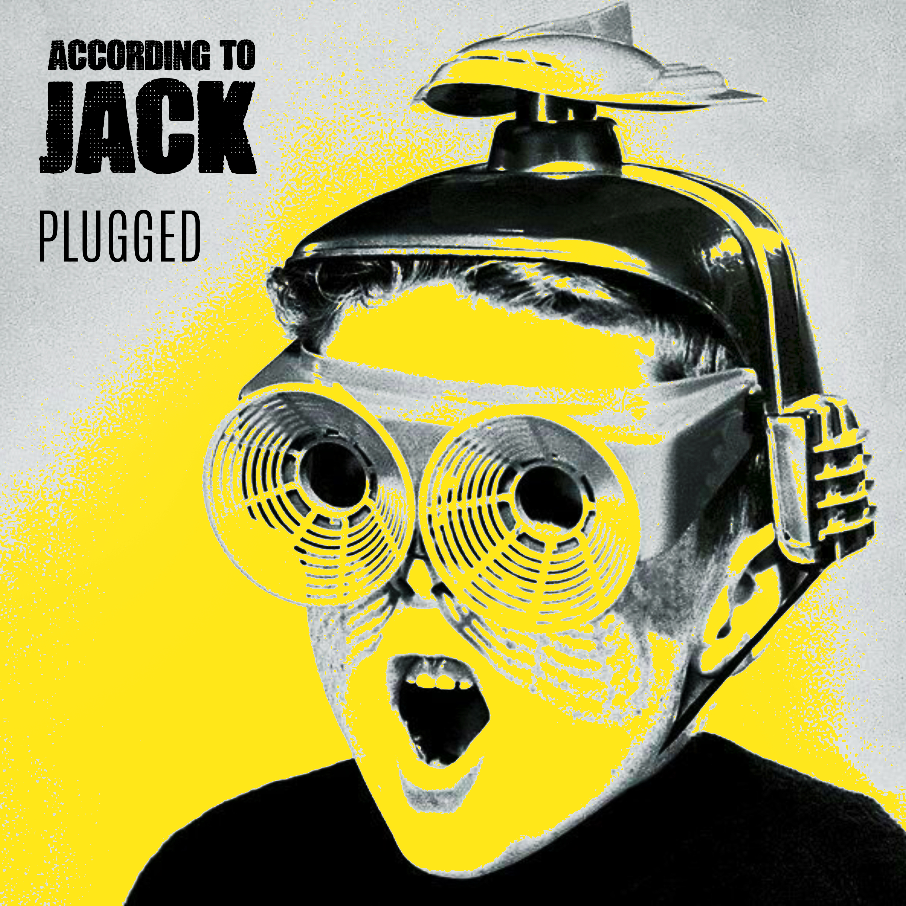

Review
ACCORDING TO JACK - Plugged

Bei RandaleFUNK läuft offenbar gerade eine kleine italienische Invasion.
Kaum habe ich eine Skatepunk-Band aus der Gegend um Padova entdeckt, landet schon die nächste Mail von dort im Postfach.
Ich könnte dem Algorithmus die Schuld geben. According To Jack hatten jedoch die Frechheit, persönlich zu schreiben.
Italien habe ich musikalisch lange ziemlich erfolgreich umgangen. Angeblich wegen der Sprachbarriere. Bei einer Band, die auf Englisch singt, hält diese Ausrede keine paar Sekunden.
Vielleicht war ich schlicht zu faul, über die Alpen zu hören.
„Plugged“ ist die zweite EP von According To Jack und die erste mit vollständiger Band. Giacomo Rampazzo startete das Projekt 2022 allein und akustisch. Drei Stücke der ersten EP „Reason To Exist“ wurden nun live im Studio von Angelica Gheller mit Gitarren, Bass und Schlagzeug neu aufgenommen. Dazu kommt „Bad Moon Rising“ von Creedence Clearwater Revival.
Mit dem akustischen Material stand Jack 2024 beim Bay Fest bereits im Vorprogramm von Descendents und Neck Deep. Ein Jahr später kündigte „The Ballad of the Monkey Man“ den Wechsel zur Bandbesetzung an. „Plugged“ zieht diesen Schritt jetzt vollständig durch.
Der Titel „Plugged“ beschreibt diesen Schritt ziemlich treffend.
Beim Opener „Reason To Exist“ springt mein Kopf sofort zu MxPx, Green Day in den Neunzigern und vielleicht noch ein wenig Nerf Herder. Über die genaue Sortierung dürfen sich Menschen streiten, die ihre Platten nach Untergenres abheften.
Ich drehe lieber die Anlage auf.
Spätestens bei „Bad Moon Rising“ ist die Nachbarschaft ebenfalls Teil der Review. Mit zweimal 450 Watt reichen meine Boxen notfalls bis auf die andere Straßenseite.
Ab jetzt hören dort also auch alle Punkrock.
Ob sie wollen oder nicht.
Das stärkste Stück haben According To Jack für den Schluss aufgehoben. „Carry The Burden“ wechselt zwischen Tempo und Ruhe, zieht wieder an und bringt eine Sentimentalität mit, die nicht sofort nach Gruppenkuscheln verlangt.
Gerade hier hört man am deutlichsten, dass aus den alten Akustikstücken nicht einfach nur lautere Versionen geworden sind.
„Plugged“ blickt zurück, ohne dort stehenzubleiben. Die elektrische Fassung macht ziemlich verständlich, warum aus dem früheren Soloprojekt inzwischen eine Band geworden ist.
Vier Stücke später ist Schluss. Meine italienische Bildungslücke ist wenigstens etwas kleiner.
Hang loose, Jack.
Die selbstproduzierte EP „Plugged“ ist am 21. August 2026 erschienen und digital sowie auf CD erhältlich.
RandaleFUNK apparently has a small Italian invasion going on right now.
No sooner had I discovered a skate-punk band from around Padova than the next email from there landed in my inbox.
I could blame the algorithm. According To Jack, however, had the nerve to write to me personally.
I had been pretty successful at avoiding Italy musically for a long time. Supposedly because of the language barrier. With a band that sings in English, that excuse lasts all of a few seconds.
Maybe I was simply too lazy to listen beyond the Alps.
“Plugged” is According To Jack’s second EP and their first as a full band. Giacomo Rampazzo started the project alone and acoustic in 2022. Three tracks from the first EP, “Reason To Exist,” have now been recorded live in the studio by Angelica Gheller with guitars, bass, and drums. Creedence Clearwater Revival’s “Bad Moon Rising” completes the set.
Jack had already brought the acoustic material to Bay Fest in 2024, opening for Descendents and Neck Deep. A year later, “The Ballad of the Monkey Man” announced the move to a full-band lineup. “Plugged” now follows that step all the way through.
The title “Plugged” describes that transition pretty accurately.
The opener “Reason To Exist” immediately sends my head toward MxPx, ’90s Green Day, and maybe a little Nerf Herder. People who file their records by subgenre are welcome to argue over the exact classification.
I would rather turn up the stereo.
By the time “Bad Moon Rising” kicks in, the neighborhood has also become part of the review. With two 450-watt speakers, my setup reaches the other side of the street if necessary.
So everybody over there listens to punk rock now.
Whether they want to or not.
According To Jack saved the strongest track for last. “Carry The Burden” moves between speed and calmer moments, picks up again, and brings in some sentiment without immediately demanding a group hug.
This is where you can hear most clearly that the old acoustic songs did not simply become louder versions of themselves.
“Plugged” looks back without staying there. The electric version makes it easy to understand how the former solo project has grown into a band.
Four tracks later, it is over. At least my Italian musical blind spot has become a little smaller.
Hang loose, Jack.
The self-produced EP “Plugged” was released on August 21, 2026, and is available digitally and on CD.
According To Jack auf YouTube
According To Jack auf Instagram
According To Jack auf Facebook
According To Jack on YouTube
According To Jack on Instagram
According To Jack on Facebook